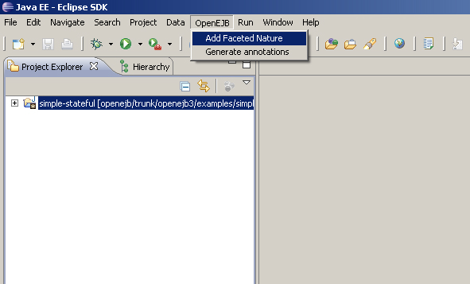
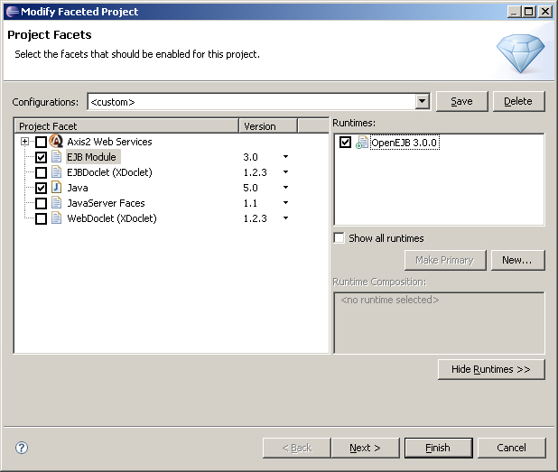
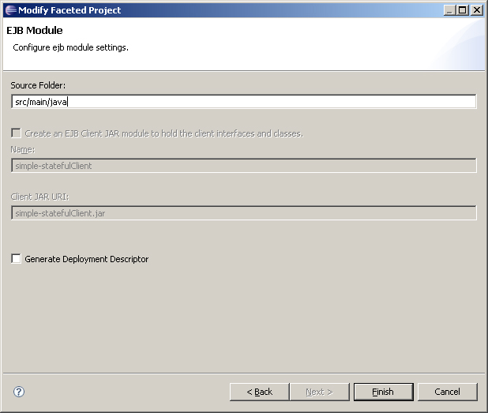
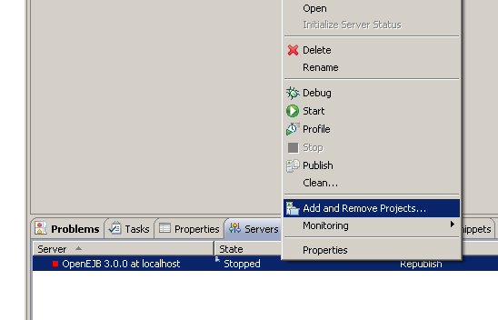
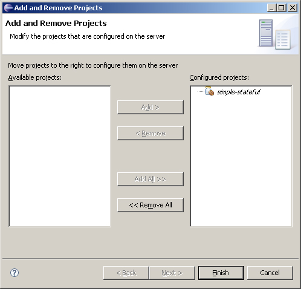
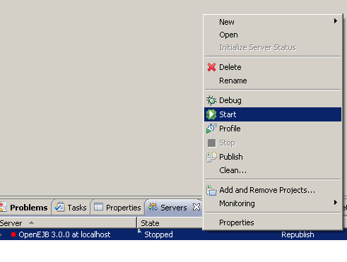

In order to deploy your project to an OpenEJB server in Eclipse, your project must be a Java EE project, with the EJB facet enabled. If your project doesn't have the Faceted nature, you can use the OpenEJB plugin to add it. Simply select OpenEJB->Add Faceted Nature from the menu bar.
To add the EJB facet, right click on the project in the navigator, and select Properties. Select Project Facets on the left hand side. Click on the Modify Project button.

Select the EJB Module facet, and the Java Facet. Remember to select your OpenEJB runtime too. Click Next.
Enter the source folder for the EJBs in your project and click Finish.
Now right click on your OpenEJB server in the servers view, and select Add and Remove Projects.
Add your project to the server, and click Finish.
To start the server, Right click on your OpenEJB server, and select Start.
